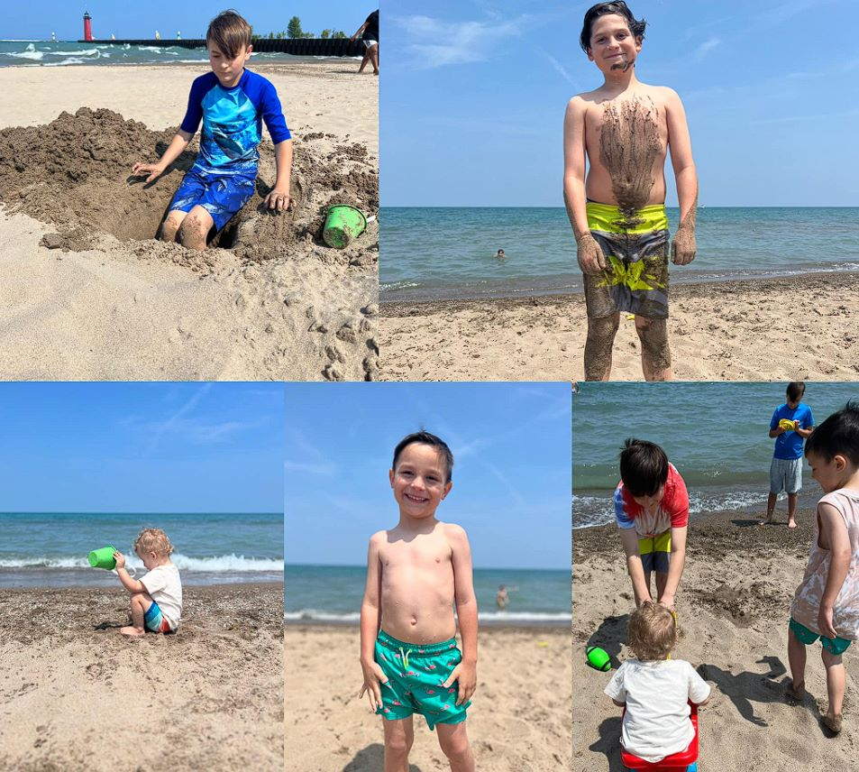

About Me
Hi, I'm Amber, the mom behind this blog. I'm a 28-year-old marketing manager, wife, and mother of four wild boys: Bonus Son, Jason, 13, Chandler, 11, Emmett, 7, and A.J, 3. I live in Kenosha, Wisconsin, where I enjoy reading, cooking, gardening, and spending time with my family.
I started this blog in 2024 as a way to express myself and connect with other moms who share similar experiences and interests. I love writing about topics that matter to me, such as parenting, health, lifestyle, travel, and more. I hope you find my blog informative, entertaining, and inspiring.
Thank you for visiting my blog and for your support. I would love to hear from you, so feel free to leave a comment, send me an email, or follow me on social media.